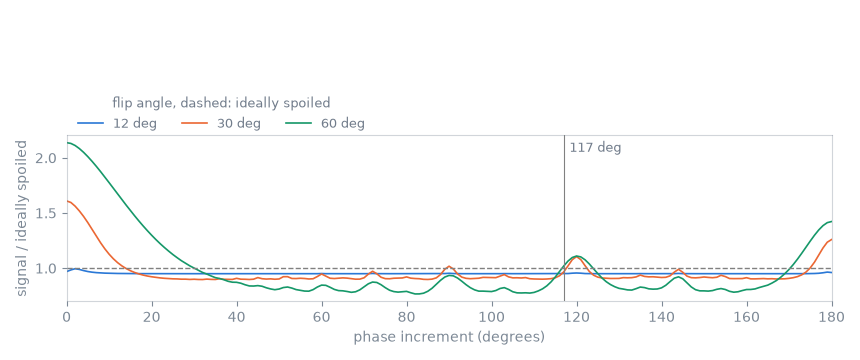
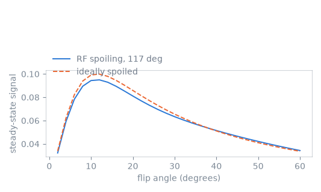

Note
Go to the end to download the full example code.
RF spoiling#
The scope of this notebook is to remove the coherent pathway the previous page was left with, by advancing the phase of the pulse and of the receiver by a quadratically increasing amount from one repetition to the next, and to measure which phase increments do so.
The observable is the steady-state signal against the phase increment, summed across a voxel as before. The increment in common use is read off that curve rather than assumed.
Outline:
The phase cycle. The quadratic increment, and where it is written in the RF and ADC events.
One repetition. The sequence, and the phase offsets read back from the blocks it holds.
Steady state against phase increment. The sweep the increment is chosen from.
The chosen increment against flip angle. What it gives, against the ideally spoiled signal, over the flip angles a T1-weighted acquisition uses.
The residual this page removes is measured in Gradient spoiling.
The phase cycle#
The transmit phase of repetition \(n\) is advanced by \(n\) times a fixed increment, so that the phase itself grows quadratically:
The pathway a pulse refocuses from an earlier repetition arrives with a phase that depends on how many repetitions ago it was produced, so a phase that is not linear in \(n\) puts successive repetitions’ residuals at different phases and their sum towards zero. The signal of the current repetition is unaffected, because the receiver is advanced by the same amount.
import numpy as np
import pypulseqpp as pp
system = pp.Opts(
max_grad=32.0,
grad_unit="mT/m",
max_slew=130.0,
slew_unit="T/m/s",
rf_dead_time=100e-6,
rf_ringdown_time=20e-6,
adc_dead_time=10e-6,
)
FOV = 220e-3
MATRIX = 128
THICKNESS = 5e-3
FLIP_ANGLE_DEG = 12.0
REPETITION_TIME = 20e-3
SPOILER_CYCLES = 4.0
PHASE_INCREMENT_DEG = 117.0
VOXEL = FOV / MATRIX
def transmit_phase(repetition, increment_deg):
"""The phase of one repetition's pulse and receiver, in radians."""
return np.deg2rad(increment_deg) * repetition * (repetition + 1) / 2
One repetition#
phase_offset carries the phase of an RF event and of an ADC event, both
in radians. Setting the two to the same value per repetition is what makes
the receiver follow the transmitter; the events are otherwise those of the
gradient echo.
rf, gz, gz_reph = pp.make_sinc_pulse(
flip_angle=np.deg2rad(FLIP_ANGLE_DEG),
duration=2e-3,
slice_thickness=THICKNESS,
apodization=0.5,
time_bw_product=4.0,
delay=system.rf_dead_time,
system=system,
use="excitation",
return_gz=True,
)
dwell, readout_time = pp.calc_adc_timing(
MATRIX,
26e-6,
grad_raster_time=system.grad_raster_time,
adc_raster_time=system.adc_raster_time,
)
gx = pp.make_trapezoid(
channel="x", flat_area=MATRIX / FOV, flat_time=readout_time, system=system
)
adc = pp.make_adc(num_samples=MATRIX, dwell=dwell, delay=gx.rise_time, system=system)
gx_pre = pp.make_trapezoid(channel="x", area=-gx.area / 2, duration=1e-3, system=system)
gy_pre = pp.make_trapezoid(
channel="y", area=MATRIX / (2 * FOV), duration=1e-3, system=system
)
spoiler = pp.make_crusher(SPOILER_CYCLES, VOXEL, channel="z", system=system)[0]
played = (
pp.calc_duration(rf, gz)
+ pp.calc_duration(gx_pre, gy_pre, gz_reph)
+ pp.calc_duration(gx, adc)
+ pp.calc_duration(spoiler)
)
recovery = pp.make_delay(
pp.round_to_raster(REPETITION_TIME - played, system.block_duration_raster)
)
seq = pp.Sequence(system=system)
for repetition, step in enumerate(np.linspace(-1.0, 1.0, MATRIX, endpoint=False)):
phase = transmit_phase(repetition, PHASE_INCREMENT_DEG) % (2 * np.pi)
rf.phase_offset = phase
adc.phase_offset = phase
seq.add_block(rf, gz)
seq.add_block(gx_pre, pp.scale_grad(gy_pre, step), gz_reph)
seq.add_block(gx, adc)
seq.add_block(spoiler)
seq.add_block(recovery)
ok, errors = seq.check_timing()
print(f"timing {ok}, {seq.num_blocks} blocks, {seq.duration()[0]:.3f} s")
timing True, 640 blocks, 2.560 s
The phase the events were written with is read back from the blocks, which is where an interpreter and a reconstruction find it.
written = np.array(
[np.rad2deg(seq.get_block(1 + 5 * n).rf.phase_offset) for n in range(6)]
)
print("transmit phase of the first repetitions (degrees): ", np.round(written, 1))
transmit phase of the first repetitions (degrees): [ 0. 117. 351. 342. 90. 315.]
Steady state against phase increment#
The summation is the one of the previous page with the transmit phase of each repetition applied to the pulse and removed from the signal.
ISOCHROMATS = 201
REPETITIONS = 500
_, _, t_excitation, _, t_adc = seq.calculate_kspacePP(block_range=[1, 5])
ECHO_TIME = float(t_adc[MATRIX // 2] - t_excitation[0])
def steady_state(increment_deg, flip_angle_deg, t1=1000e-3, t2=80e-3):
"""The signal the repetition settles at, under the given phase cycle."""
flip = np.deg2rad(flip_angle_deg)
position = (np.arange(ISOCHROMATS) + 0.5) / ISOCHROMATS
spoiler_phase = np.exp(2j * np.pi * SPOILER_CYCLES * position)
rest = REPETITION_TIME - ECHO_TIME
transverse = np.zeros(ISOCHROMATS, dtype=complex)
longitudinal = np.ones(ISOCHROMATS)
signal = np.zeros(REPETITIONS, dtype=complex)
for repetition in range(REPETITIONS):
phase = transmit_phase(repetition, increment_deg)
turn = np.exp(1j * phase)
rotated = (
np.cos(flip / 2) ** 2 * transverse
+ np.sin(flip / 2) ** 2 * turn**2 * np.conj(transverse)
- 1j * np.sin(flip) * turn * longitudinal
)
longitudinal = np.cos(flip) * longitudinal + np.sin(flip) * np.imag(
np.conj(turn) * transverse
)
transverse = rotated
transverse *= np.exp(-ECHO_TIME / t2)
longitudinal = 1.0 + (longitudinal - 1.0) * np.exp(-ECHO_TIME / t1)
# The receiver is advanced with the transmitter, so the phase of the
# current repetition's signal is removed from what is recorded.
signal[repetition] = (transverse * np.conj(turn)).mean()
transverse *= np.exp(-rest / t2) * spoiler_phase
longitudinal = 1.0 + (longitudinal - 1.0) * np.exp(-rest / t1)
return signal
def ideally_spoiled(flip_angle_deg, t1=1000e-3):
"""The signal of a repetition that begins with no transverse component."""
flip = np.deg2rad(flip_angle_deg)
recovered = np.exp(-REPETITION_TIME / t1)
return np.sin(flip) * (1 - recovered) / (1 - recovered * np.cos(flip))
INCREMENTS = np.arange(0.0, 181.0, 1.0)
SWEPT_FLIPS = (FLIP_ANGLE_DEG, 30.0, 60.0)
against_increment = {
flip: np.array([abs(steady_state(step, flip)[-1]) for step in INCREMENTS])
for flip in SWEPT_FLIPS
}

flip at 117 deg lowest highest
12 0.950 0.950 at 86 0.995 at 2
30 0.967 0.897 at 32 1.609 at 0
60 1.020 0.767 at 82 2.137 at 0
The curve is spiky rather than smooth. An increment that returns to a small set of phases leaves the residual as coherent as no phase cycle at all: zero and 180 degrees are the clearest, and each of the flip angles swept here has others of its own. An increment of 117 degrees is within a few percent of the ideally spoiled value at every one of them, which is what recommends it, and its neighbourhood is narrow — at 60 degrees of flip, an increment of 82 degrees gives a quarter less signal than the ideal and 117 gives it to two percent.
The chosen increment against flip angle#
The comparison of the previous page, repeated with the phase cycle in place.
FLIP_ANGLES = np.arange(2.0, 61.0, 2.0)
spoiled = np.array(
[abs(steady_state(PHASE_INCREMENT_DEG, flip)[-1]) for flip in FLIP_ANGLES]
)
ideal = ideally_spoiled(FLIP_ANGLES)

largest departure from the ideally spoiled signal: 5.5 percent, at 20 degrees
The two curves lie together over the whole range, and the peak is back at the Ernst angle. What remains is a departure of a few percent that depends on T2 and on the flip angle, which is the residual the phase cycle cancels rather than removes; a T1 estimated from this signal under an ideally spoiled model carries it as a bias.
Total running time of the script: (0 minutes 9.297 seconds)